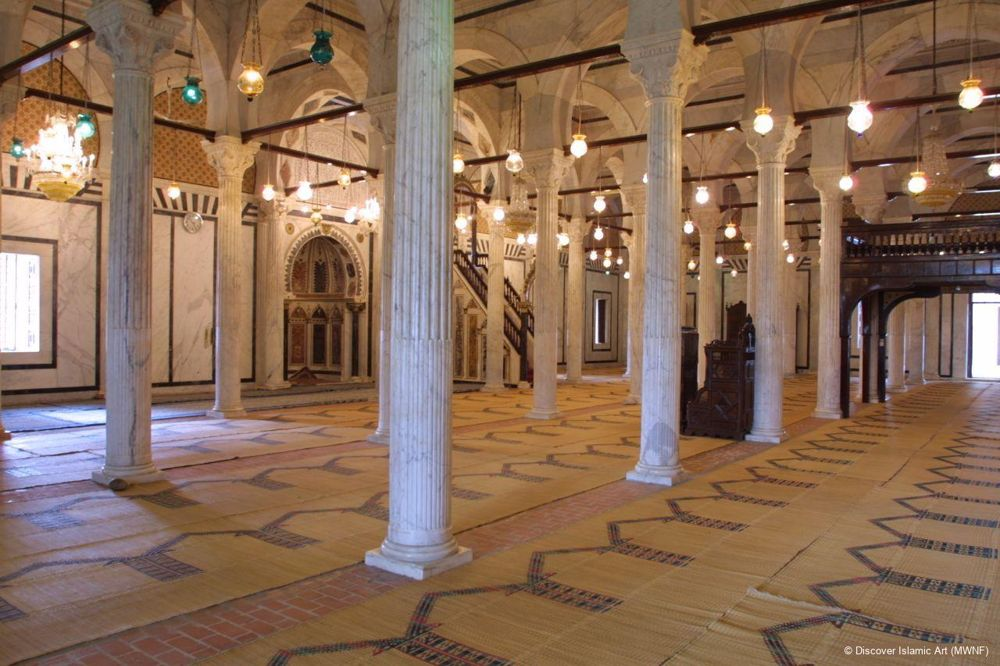
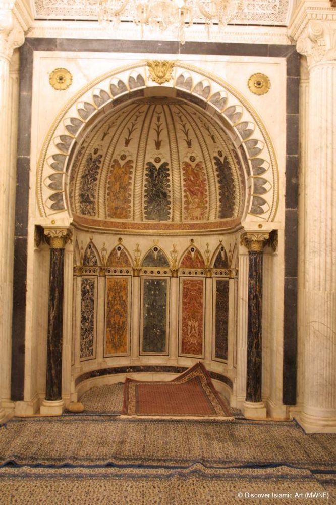

Prezentare
Dominând piața Halfaouine, la nord de medina din Tunis, această moschee de la începutul secolului al XIX-lea este ultima mare moschee construită în Tunis înainte de protectoratul francez. Coloanele și zidurile de marmură italiană fac din ea lăcașul de rugăciune tunisian cel mai marcat de influența europeană.
Fotografii





Istorie
Poartă numele lui Youssef Sahib et-Tabaa, născut pe la 1765 în Moldova, robit în copilărie și intrat în 1781 în slujba prințului Hammouda Pacha, al cărui păstrător al sigiliului (sahib et-tabaa) a devenit în 1782, apoi prim-ministru. A construit moscheea între 1808 și 1814 sub conducerea meșterului Hadj Sassi ibn Frija și a inaugurat-o în 1814. Rănit într-un atentat la Bardo în septembrie 1814, a murit în ianuarie 1815: minaretul a rămas neterminat până în anii 1970.
Arhitectură
Ridicată deasupra unor prăvălii și depozite, pe o temelie de piatră cioplită adusă din ruinele Cartaginei, moscheea domină piața. O scară în cot urcă spre galeria de est, cu dublă colonadă și cinci arcade deschise spre piață; minaretul octogonal se înalță la capătul ei. Trei galerii încadrează sala de rugăciune, cu 9 nave și 7 travee, acoperită cu bolți în leagăn. Cele două travee de la capete, de-a lungul zidului qiblei și al zidului opus, au fiecare câte trei cupole: una în centru și câte una în fiecare colț.
În detaliu
Potrivit fișei muzeului virtual Discover Islamic Art, niciun alt lăcaș de rugăciune tunisian nu arată o influență occidentală atât de clară. Marmura, mai abundentă decât în alte părți, a venit direct de la Carrara, în Italia. Coloanele zvelte și canelate poartă capiteluri compozite, o interpretare italiană a modelului tunisian din epoca turcă; arcele, abia depășite, părăsesc potcoava clasică, iar buiandrugii poartă basoreliefuri neobaroce. Plăcilor de ceramică le rămân doar părțile de sus ale zidurilor. Mihrabul și minbarul fix, din marmură policromă, îmbină arcaturi pseudogotice, flori și tușe de aurire. Galeria de est are un mihrab exterior pentru rugăciune pe vreme caldă.
Rol și influență
Moscheea era inima unui vast ansamblu întemeiat de ministru în slujba cartierului Halfaouine: două madrasa, un suk, un hammam, o fântână publică (sabil), un fondouk, palatul și mormântul său, în care se intră, ca și în madrasa, prin fațada de nord.
Date importante
- 1808Ministrul Youssef Sahib et-Tabaa începe lucrările
- 1814Inaugurarea moscheii de către ctitorul ei
- 1815Moartea ctitorului, rănit la Bardo cu un an înainte
- 1970Minaretul primește în sfârșit felinarul (anii 1970)
Rugăciunea de vineri și lectura Coranului
Informații date și confirmate de vizitatori sau preluate dintr-o sursă publică citată. Nicio oră nu este inventată.
Vizitare
Este mai întâi un loc de rugăciune: veniți în ținută decentă, descălțați-vă pentru a intra în sala de rugăciune și evitați orele de rugăciune. În mai multe mari moschei, vizitatorii nemusulmani pot intra în curte, dar nu în sala de rugăciune. Programul se schimbă: informați-vă la fața locului.
Pe hartă
Documente și legături
Surse
- Texte redactate de Mosquées en Tunisie pornind de la documentele de mai sus (Wikipedia, Qantara, Discover Islamic Art, UNESCO), verificate la 09.10.2026.
- Wikidata : Q3324882 (CC0)
- Fotografii: Wikimedia Commons, autorul și licența sub fiecare fotografie.
- Secțiunea „În detaliu” și fotografiile marcate Discover Islamic Art: după Museum With No Frontiers (MWNF), cu acordul său.
- Poziție: OpenStreetMap (ODbL) și Wikidata.